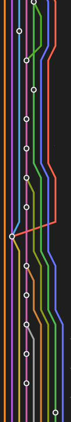
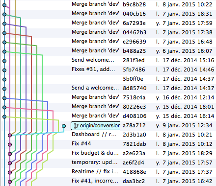
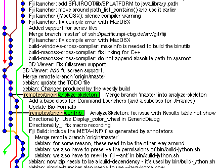
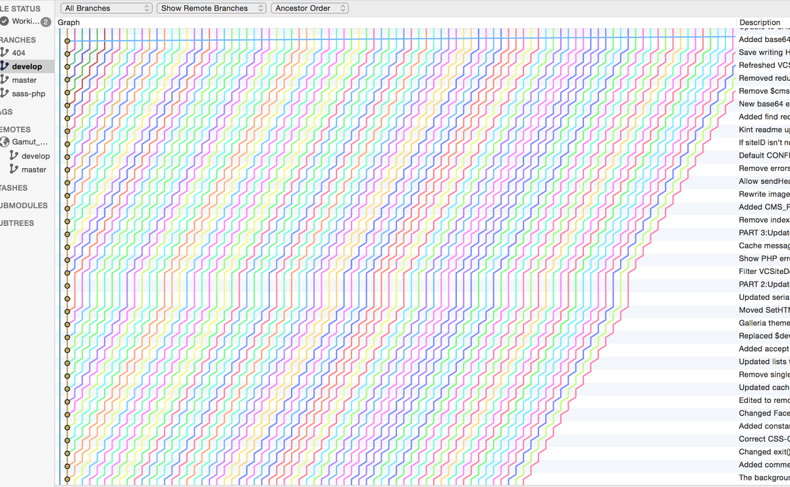
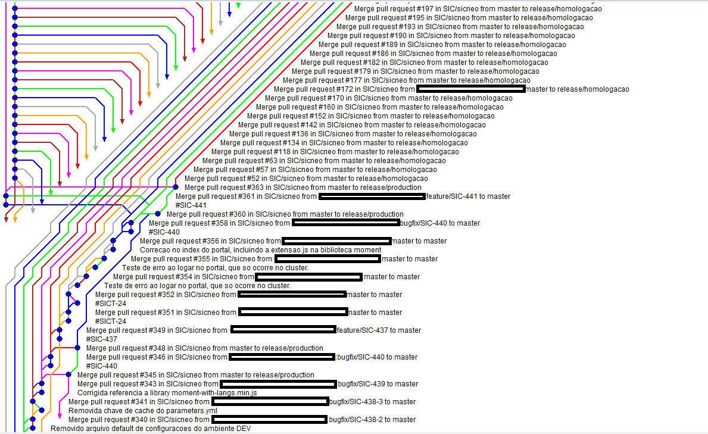

### Fondamentaux git
- Les bases (graph, id de commit, branches et repo)
- Mettre à jour son workspace (fetch, pull)
- Pousser ses modifs (commit, push)
- Supprimer/annuler des commits (revert, reset)
- Mettre à jour une branche (merge, rebase)
- Résoudre les conflits
- Git avancé ? (cherry-pick, rebase -i, fixup, reflog, ...)
Le graph git (au cas où)
En théorie
En pratique

Quelques perles

Quelques perles

Quelques perles

Quelques perles

Branches et repos
Repo distant (origin)
masterbranch1branch2
Local
origin/masterorigin/branch1origin/branch2
masterbranch1branch2
git fetch
(avant)
Repo distant (origin)
master commit Ebranch1 commit Fbranch2 commit G
Local
origin/master commit Aorigin/branch1 commit Borigin/branch2 commit C
master commit Abranch1 commit Bbranch2 commit D
git fetch
(après)
Repo distant (origin)
master commit Ebranch1 commit Fbranch2 commit G
Local
origin/master commit Eorigin/branch1 commit Forigin/branch2 commit G
master commit Abranch1 commit Bbranch2 commit D
git pull (git fetch + git merge)
Repo distant (origin)
master commit Ebranch1 commit Fbranch2 commit G
Local
origin/master commit Aorigin/branch1 commit Borigin/branch2 commit C
master commit Abranch1 * commit Bbranch2 commit D
git pull (git fetch + git merge)
Repo distant (origin)
master commit Ebranch1 commit Fbranch2 commit G
Local
origin/master commit Eorigin/branch1 commit Forigin/branch2 commit G
master commit Abranch1 * commit Fbranch2 commit D
git pull (sans commit local)
origin/branch1
branch1
=>
branch1
git pull (avec commit local)
origin/branch1
branch1
=>
branch1
git pull --rebase
origin/branch1
branch1
=>
branch1
Toujours utiliser **git pull --rebase**
OU
configurer **rebase** par défaut :
**git config --global pull.rebase true**